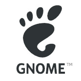

Operating Systems
I dual boot between Windows and Linux on my desktop. I use two storage drives to dual boot between the operating systems. The Grub bootloader allows me to do this. I tried OpenBSD operating systems on a virtual machine. I have been doing some research on OpenBSD. You can kind of see that I have a bias for Unix like systems. Using Linux made me like how Unix and Unix like operating systems work.
The Linux Distro I Use
The Linux distro I use on my system is Debian. Debian is a stable linux distribution. Debian is the linux distribution that Ubuntu is based on. Debian is easy to maintain since it does not receive updates as often. Debian get tested throughly to remove the software bugs before a new release.
Debian has three branches you can choose from and these are stable, testing and unstable; Debian defaults to stable. Debian is a great distribution for servers. For Desktop users, you are most likely going to use the non-free iso not the default debian iso. The non-free iso comes with all the properitary drivers needed for your system. This is important because without the non-free components, you computer will not be able to connect to the internet during the installation process.
The Desktop Environment I use on Linux

I have used many desktop environments and windows managers. The desktop environments I tried out were KDE Plasma, Gnome, Xfce, LXQt, MATE, and Cinnamon. The Window Managers I have tried out were i3wm, Xmonad, Qtile, Awesomewm, Bspwm, DWM, Spectrwm, Openbox and Fluxbox. It has taken me a few months on to decide which DE or WM I liked the best.
The DE environment I use on Debian is Gnome. The reason I use Gnome because it is more responsive compared to the Cinnamon desktop and KDE Plasma. Gnome's UI is faster than KDE Plasma's UI. In general, Gnome is very well optimized.